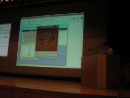

質疑応答は後ほどまとめて。
Inside Ruby/Tk （永井 秀利）
- スピーカー
- 永井 秀利 - 九州工業大学 情報工学部 知能情報工学科
- プロフィール
- Ruby/Tk メンテナ。 著書：『Rubyを256倍使うための本 界道編』、『Rubyアプリケーションプログラミング』
- 講演時間
- 14：30〜14：45
- 講演者による資料
- http://www.dumbo.ai.kyutech.ac.jp/~nagai/RubyKaigi2007-nagai.pdf
http://www.dumbo.ai.kyutech.ac.jp/~nagai/RubyKaigi2007-nagai.swf
ごめんなさい
- ドキュメントプロジェクトで足をひっぱっている
- 1.9で動きません
協力者募集中
Ruby/Tk
- 標準添付
- 手軽にGUI
Tcl/Tkの全ての機能がいろいろなアーキテクチャで使えます。 DS/Liteでも。ネットワーク機能が遅くてデモはなし。
Tcl/Tk
現在も開発は進行中。標準の構成は汎用的なものに絞りこんであるのでコンパクト。 キャンバスウィジェットの有能さが有名。
処理が遅いといわれているが現在はそうでもない。
奥が深い。間口は広いのだが真に使いこなすのは難しいか？
オブジェクト指向ではないのでライブラリ化が面倒。Ruby/Tkで隠蔽できる。
ウィジェット作成
今日のお題。
Ruby/Tkから見た場合の生成方法は4種類。
Tcl/Tkのコマンドとしてつくる
Tcl/Tkのウィジェット生成シンタックスに則って定義できる。
TkWindowの子クラスとして定義。オプションはHashで与える。
通常はTkWindow#initializeを再定義する必要はない。 パス指定オプションなどは後で公開する資料を見てください。
TkWindow#create_selfも通常は再定義する必要はない。
最小定義
class Tk::Hoge < TkWindow TkCommandNames = ['tk::hoge'.freeze].freeze end
この定義ではオプションデータベースとの連携が定義されていないが。
オプションデータベース
外部ファイルとしてウィジェットのデフォルトの属性値を定義できる。 .XDefaultsのようなもの。
ウィジェットクラスに対応するデータベースクラス名が存在するなら、 定数WidgetClassNameに設定しておくべき。
ウィジェットクラスパスからウィジェットオブジェクトへの自動変換 が必要となりうるなら、他にも定義しておくべき。
というわけでデータベースクラスを設定する場合の最小定義は、 上記に2行(データベースクラス名と自動変換)追加することになる。
Ruby/Tkからの継承
データベースクラスを与えることはできない
複数ウィジェットの組み立て
initializeメソッドの再定義が必要。
@epathと@pathを指定する。 復号のなかで中心となるウィジェットを指定する。
ウィジェット属性操作の支援メソッドもある。 delegate、delegate_alias、option_methods。
データベースクラス名は土台のものが使われる。 必要ならオプションで指定できる。
サンプルはRubyのソースツリーの、ext/tk/sampleにあります。
その他の機能は、るびま0003号の記事も参照のこと。


Keyword(s):
References:[RubyKaigi2007速報ログ]